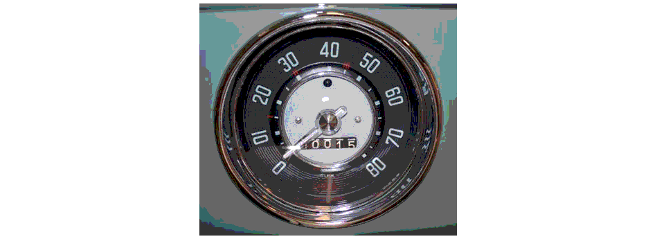
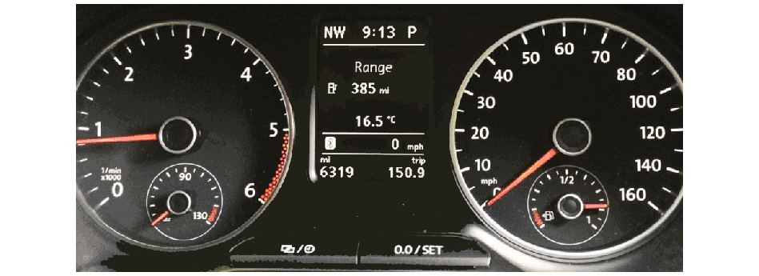

Dave drove a 1959 Volkswagen Beetle to and from MIT. In that model the
odometer (distance meter) indicated the distance in miles not tenths of miles.

Figure 11.6: Speedometer and odometer
from a Volkswagen Beetle from the late 1950s. The maximum indicated speed is
80 mph and the odometer distance is to the nearest mile.
Part of his daily (Monday through Friday) travels involved driving over the
Harvard Bridge that connects Cambridge and Boston. In the morning he would
drive from Boston’s Back Bay to MIT but not go over the
Harvard Bridge. In the evening he would drive from MIT over the Harvard Bridge
back to Boston. (This complete route is still recommended by satellite
navigation systems.)
Some days he would take exactly the same route which we will term a
“fixed route”. Other days he would take a “random route”. Every day, however,
he would take the Harvard Bridge only on his way back to Boston.
The length of the bridge was (and still is) less than 1 mile. For the purposes
of this problem we will consider the length to be measured from water’s edge to
water’s edge. (This is slightly different from the accepted definition which
is measured in smoots.)
The length of the fixed route is 3 miles from the end of the bridge (Boston) back
to the beginning of the bridge (Cambridge). The two odometer readings in the
window represent the value seen when starting to cross the bridge on the MIT
side and when reaching the end of the bridge on the Boston side.
Choose the route that you are driving (fixed or random). Then drive to the
start of the bridge, the MIT/Cambridge side. Now drive across the bridge to
Boston and record the odometer change. Finally, return to your home on Bay
State Road.
Drive 10 times across the bridge using the fixed route.
What information do the two odometer readings give you about the length
of the bridge?
Drive 10 times across the bridge using the random route. What
information do the two odometer readings give you about the length of the
bridge?
Using the fixed route, how many trips across the bridge would you
have to make to estimate the length of the bridge to within 10%?
Using the random route, how many trips across the bridge would you
have to make to estimate the length of the bridge to within 10%?
Using a modern Volkswagen Beetle with a modern odometer as shown in Figure 11.7 (below),
how many trips across the bridge would you have to make to estimate the length of the
bridge to within 10%?

Figure 11.7: Meters from a modern
Volkswagen Beetle. The maximum indicated speed is 160 mph and the total
odometer distance traveled is 6319 miles.